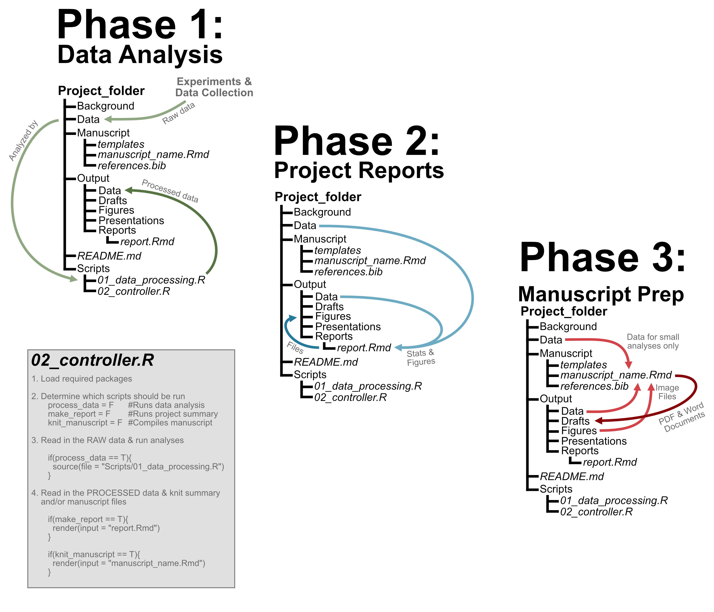

Project Development
Project Development
After the planning stages, work on the project will generally fall into three main categories (there can be lots of variation between projects though): data analysis, project reports, and manuscript prep. These three classes of project development will pull from different components of the project folder, as illustrated below.

Despite the differences, though, each class will depend on similar skill sets and development follows a similar workflow. Further, when using the project folder approach we’ve already described, all three components of project development are run through / woven together by the controller script. The general outline of what this script looks like is also included above.
Reminder - Starting a Work Session
Remember that you’ll be working in a project folder, and that the main branch of the project will usually be read-only. This affects what a typical work session might look like. Below is a general outline of the main steps you might take when sitting down at your computer to do some work on a project.
- Open your R Project via the .Rproj file.
- Pull code from the virtual working branch to make sure it’s up-to-date.
- If multiple people are working on the same project, pull from the working branch as well.
- Work on the code. Commit along the way.
- Before wrapping up, pull one last time, then push your commits to your working branch on the repo.
The “Pull Requests” section on this page will also help you understand what happens after you’ve been working on a project for a while, and are ready to merge that work into the main branch.
Important Miscellany
Key Settings
As the goal of an R Project Folder is to help make analyses reproducible, there are a couple default settings in R that you will want to change. For those interested, the changes to these settings are one of the things stored in the .Rproj file.
- Never save .Rdata when closing your session. Open up your Preferences > General, and make sure “Restore .Rdata into workspace at startup” is not checked. This will ensure that variables and other objects from your Environment are not carried over from one session to the next. Also ensure that “Save workspace to .Rdata on exit” is set to “Never”.
- In Preferences > R Markdown, make sure that “Evaluate chunks in directory” is set to “Project”. This will make it easier to navigate through the component folders when setting file paths.
- In the drop-down menu next to the “Knit” button, ensure that “Knit directory” is set to “Project”.